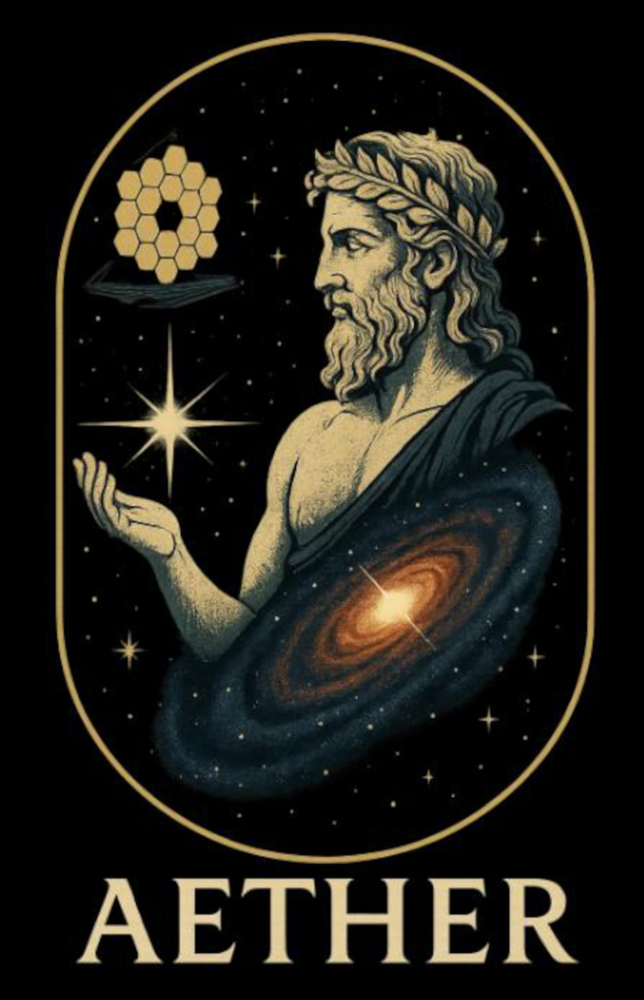

Aether
A JWST/NIRSpec IFU survey of 200 quasars at

Aether (Aἰθήρ) is the personification of the bright upper sky. According to Hesiod, he was the son of Erebus (Darkness) and Nyx (Night), and the brother of Hemera (Day). In Orphic cosmogony, Aether was the offspring of Chronos (Time) and the brother of Chaos and Erebus.
The Aether Survey
Aether is a JWST Survey program (GO #5645) using NIRSpec integral field unit spectroscopy to follow up all quasars known at 5.7 < z < 7.0 at the time of Cycle 3 deadline. Aether is designed as a systematic, homogeneous, and (virtually) unbiased survey of the reionization-era quasar population.
Survey design. Aether targets essentially the full population
of 343 known quasars in the 5.7 < z < 6.9
range identified at the time of proposal preparation, without additional
selection. This Survey-category design (rather than a pointed program) ensures a
complete, unbiased spectroscopic census of the known z ~ 6 quasar
population.